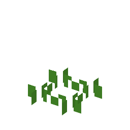

説明
①子ども 野生の麦。熟すと穂がばらばらに落ちてしまう。ときどき「穂が落ちない」種がまざるので、それを選んで植えよう。
②学生 草をこわすと、ときどき出る（種）。耕した土に植える。熟したまま放っておくと穂が落ちて芽からやり直し（収穫なし）。熟したうちに刈ると、10%で「穂が落ちない」変異の種（ヒトツブコムギ・栽培種）がまざる。
③大人 野生の麦の穂の軸はもろく、熟すと小さな穂（小穂）が1つずつ外れて地面にこぼれる。これは種をまき散らすための野生の仕組み。まれに軸がもろくならない変異株があり、人が刈り取って持ち帰り、その種をまくと、この変異株ばかりが増えていく。人は知らないうちに麦を「選んで」いた。
④ガチ ヒトツブコムギの栽培化は約1万1000年前ごろ、遺伝子の比較からトルコ南東部のカラジャダー山のあたりとされる。遺跡の穂の軸を調べると、穂が落ちない麦が多数派になるまで1000〜2000年かかったらしい ⚠️（実験では、刈り方しだいで20〜200年でも起こりうると計算された）。
作り方
（作り方のレシピは無い：拾う・掘る・ほかの方法）
使い道
（このアイテムを使うレシピは無い）